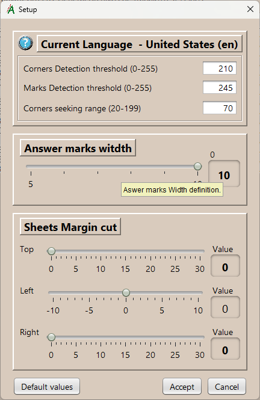

Settings
Adjustable parameters to optimize answer sheets images capture.
The accuracy of the results depends fundamentally on the answer sheets scanning quality. The scanning process must be performed in grayscale image type, at a resolution 300 or 200 dpi. If you are using an automatic sheet feeder, make sure that the sheets do not become excessively off-center, otherwise the application will not be able to interpret them. It is essential that sheet corner location points are correctly distinguished. The usual image file formats are supported, but it is advisable to be "jpg" or "png", which is with the that this app has been tested.
- Corner detection threshold.
The bright level, in 0 to 255 range, below which we consider ourselves to have found a corner mark.
Locating the corners of the answers sheet is essential to make the necessary transformations to it, and then the locate the rest of the marks at the exact point that corresponds.
- Marks detection threshold.
Same as above, but now applicable to the answer marks detection.
- Corner detection area width.
Length of the side of the square shape area, in which we will seek for each of the four corners.
- Answer marks width
Width of the answer marks area, in square shape. We can choose in a range from 5 to 10, by sliding the button.
- Sheet margin crop
If the scanned quality of the answer sheets is not good and dark areas appear on the margins, we can apply a crop to them: top, left and right; to try to improve the result.
Note: In extreme cases, when is not possible to locate the corners, the scan should be repeated with better quality.Default values
Retrieves the initial setup values.
Note: Changes will not be saved until the "Confirm" button is pressed.